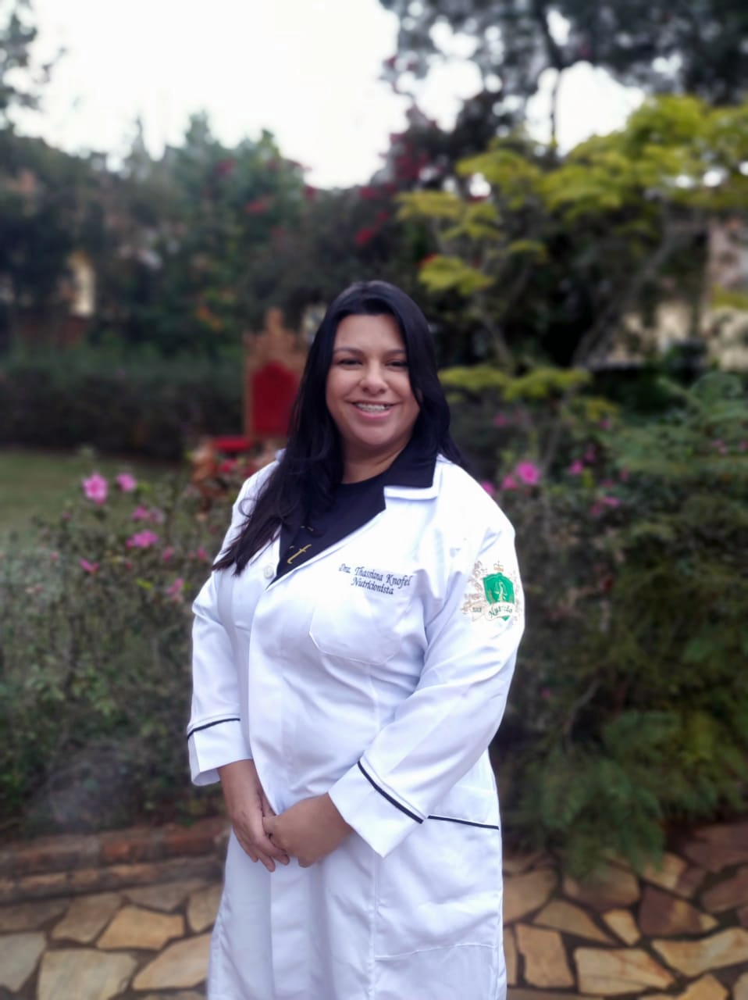

<div class="container about-container">
  <div class="row align-items-center">
    <div class="col-md-4 text-center">
      
    </div>
    <div class="col-md-8">
      <h2>Thassiana Knofel</h2>
      <p>
        Thassiana Knofel é uma nutricionista dedicada com anos de experiência ajudando pessoas a alcançar uma vida mais saudável através de uma alimentação equilibrada. Formada em Nutrição pela Universidade XYZ, Thassiana acredita que a nutrição é a base para o bem-estar físico e mental.
      </p>
      <p>
        Ao longo de sua carreira, Thassiana trabalhou com diversos pacientes, desde aqueles que buscam perder peso até atletas que desejam melhorar seu desempenho. Sua abordagem personalizada e seu profundo conhecimento em nutrição clínica a tornam uma profissional confiável e respeitada na área.
      </p>
      <p>
        Com uma paixão pela educação, Thassiana também oferece workshops e palestras sobre temas variados de nutrição, ajudando a disseminar informações valiosas para o público em geral. Sua missão é capacitar seus pacientes com o conhecimento necessário para fazer escolhas alimentares inteligentes e alcançar uma vida mais saudável.
      </p>
    </div>
  </div>
</div>
